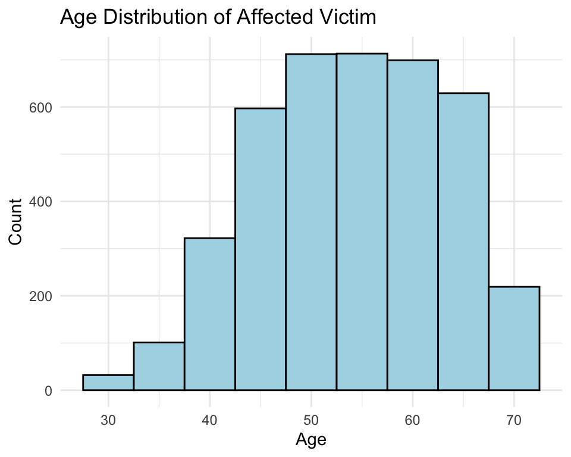
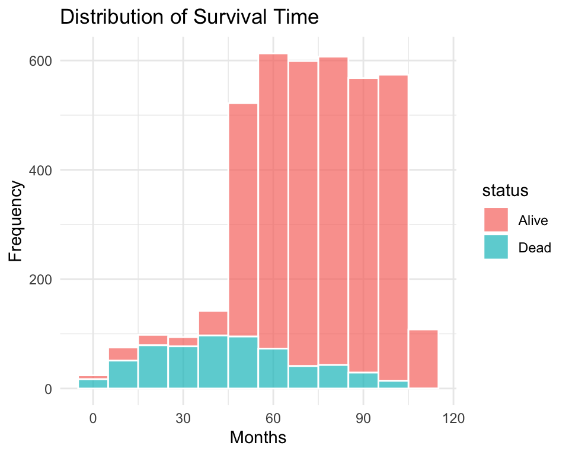
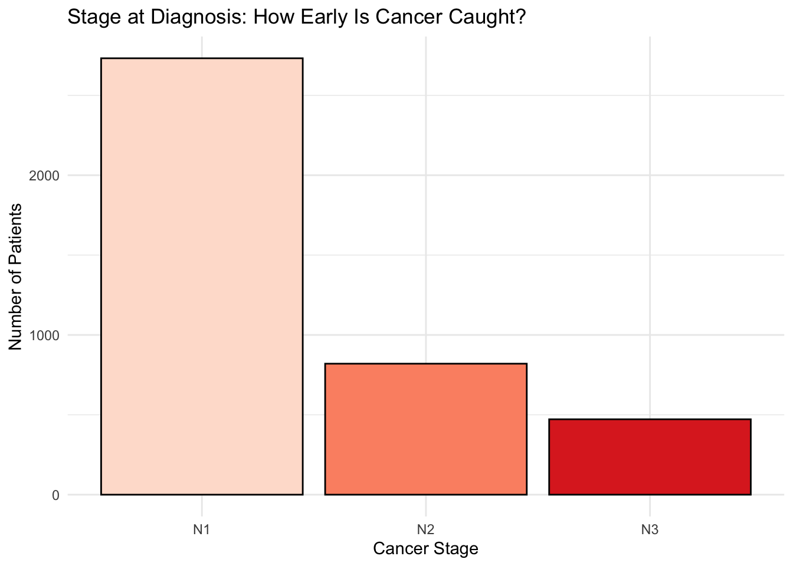
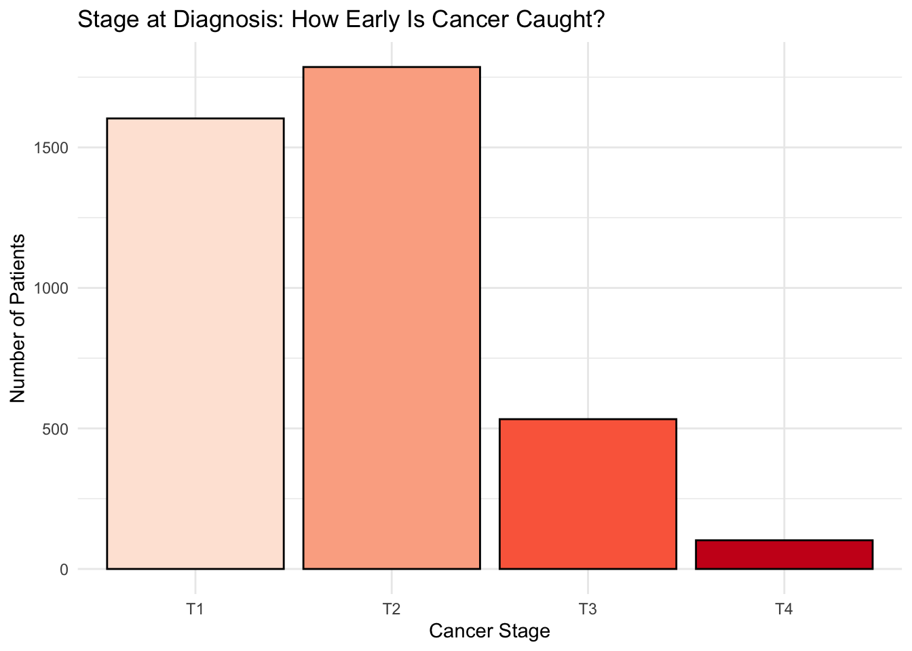
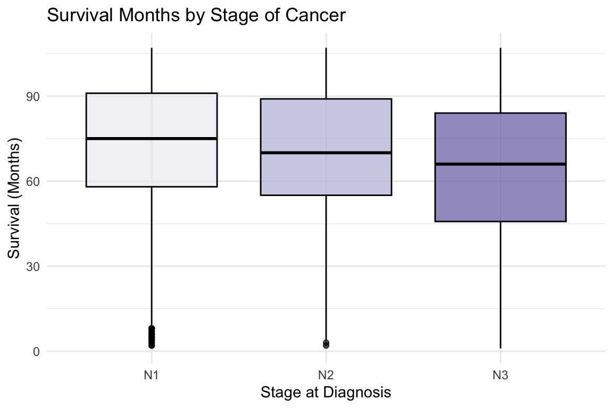
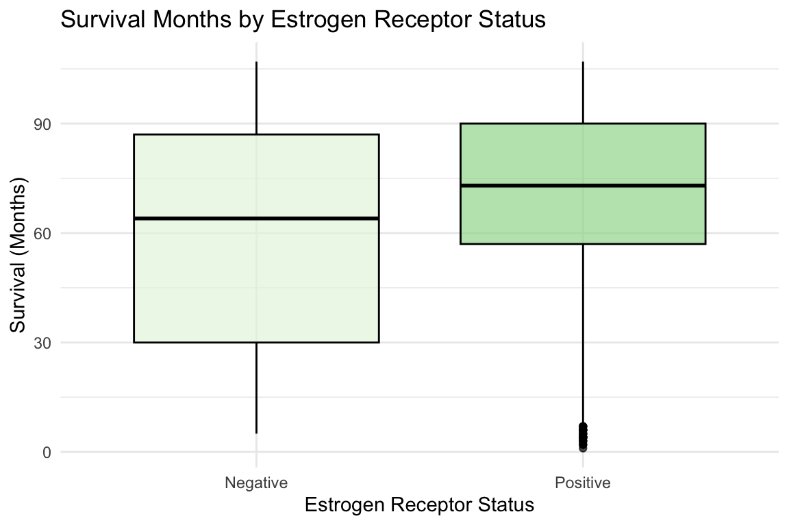
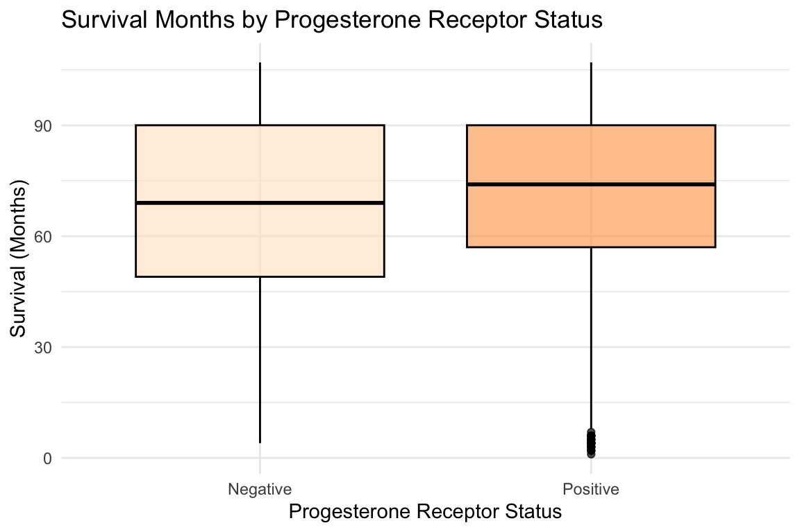

The crime scene is where the evidence is found. In this case, the crime scene is the biological and clinical data collected from patients diagnosed with breast cancer. This data includes various features such as tumor size, lymph node involvement, hormone receptor status, and patient demographics. These features help us understand the nature of the crime committed by breast cancer and provide insights into its behavior

Our defendant likes to effect people of various ages, but it seems to have a preference for 47 to 61 years old.

The histogram above shows the distribution of survival times for victims after being diagnosed with breast cancer. The defendant’s impact varies widely, with some victims surviving for many months while others succumb more quickly. This variability highlights the complexity of the crime committed by breast cancer.
To understand how early breast cancer presents, we first examine the distribution of cancer stage at diagnosis. Earlier stages indicate early detection, while advanced stages reveal delayed discovery—giving our criminal, Breast Cancer, more time to commit harm.

Most victims are found at stage N1, suggesting that breast cancer often can be detected early. However, a significant number of cases are diagnosed at later stages, indicating that the defendant can sometimes evade early detection. It is crucial to also see that the tumor size (T stage) shows a similar pattern, with many cases being diagnosed at smaller size.
Now we investigate how long victims survive after their diagnosis depending on number of nodes involved. Boxplots help visualize survival time differences clearly.

The boxplots reveal that victims diagnosed at earlier stages (e.g., N1) tend to survive longer than those diagnosed at advanced stages (e.g., N3). This pattern underscores the critical importance of early detection of the defendant to improve survival outcomes.

Other features like estrogen and progesterone receptor status also influence survival. Victims with positive receptor status tend to have longer survival times, indicating that the defendant’s behavior may vary based on these biological markers.